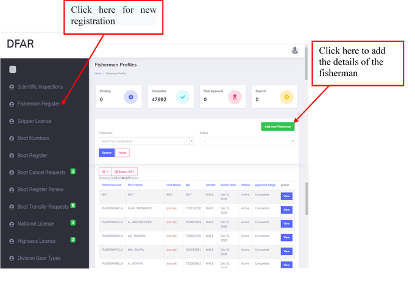
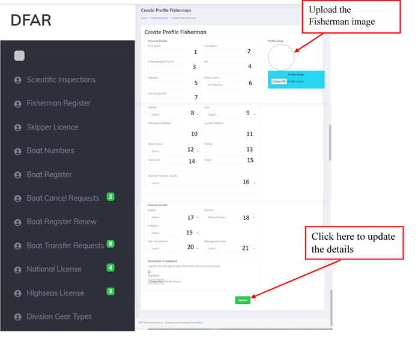
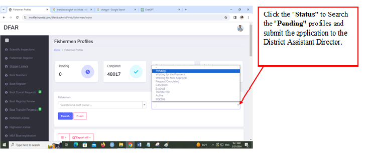
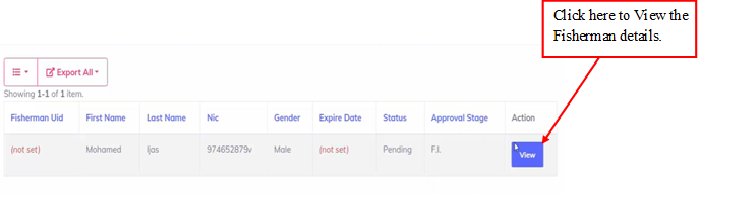
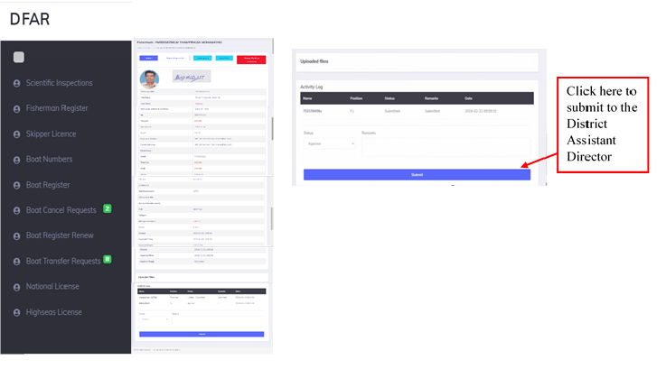
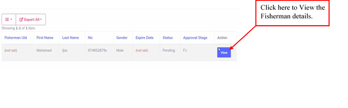
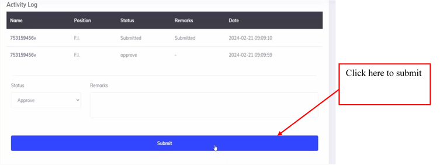
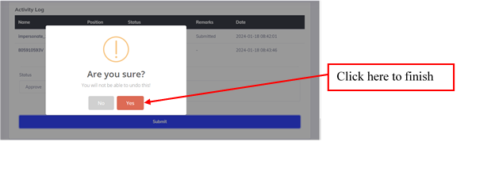
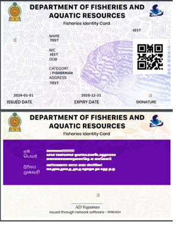

- Fisherman image for profile picture
- Fisherman's E-signature
STEP 01

• Users authorized to access the system will be provided with login credentials.
• Upon successful login, users will have access to the dashboard with relevant features and functionalities.
STEP 02

STEP 03
• After that, the fisherman registration module can be accessed in the manual bar of the screen that appears.
• A new application can be started by selecting the Fisherman Register option from the dashboard.

STEP 04
- Enter the personal details of the fisherman & fisheries details. (1-21)
Upload the Fisherman image
Upload the Fisherman’s e-signature (22)

• Fill out the application form with accurate details of the fisherman.
• Upload the e - signature of the fisherman.
• Verify the information entered before updating the application.



• It is then forwarded to the District Assistant Director.
3. Verification and Approval
•District Assistant Director will review and approve the document.



• A Fisherman Identity Card like this will finally be obtained.
